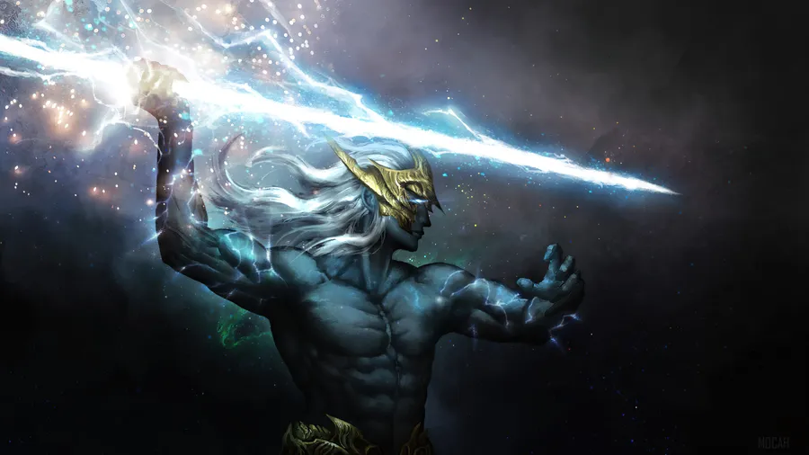

Zeus es una de las principales deidades de la mitología griega. Era considerado el rey de los dioses y gobernaba desde el monte Olimpo. Hijo de Cronos y Rea, logró destronar a su padre y liberar a sus hermanos. Se le asociaba con el cielo, los truenos y los rayos, siendo su arma característica el rayo. Además, era protector de las leyes y la justicia, aunque también es conocido por sus numerosas aventuras amorosas con diosas y mortales.

El Olimpo
Historia
En la mitología griega, el Olimpo surge tras la gran guerra llamada Titanomaquia, en la que los dioses olímpicos, liderados por Zeus, lucharon contra los titanes (sus predecesores, hijos de Urano y Gea).
Después de diez años de batalla, los dioses olímpicos salieron victoriosos gracias a la ayuda de los cíclopes y los hecatónquiros, quienes les dieron armas poderosas como el rayo de Zeus, el tridente de Poseidón y el casco de invisibilidad de Hades.
Con la derrota de los titanes, fueron encerrados en el Tártaro, y Zeus junto a sus hermanos Poseidón y Hades se repartieron el mundo: Zeus obtuvo el cielo y se convirtió en soberano, Poseidón gobernó el mar, Hades recibió el inframundo. Así, los dioses se establecieron en el Monte Olimpo, que se convirtió en su morada sagrada y en el centro del poder divino.